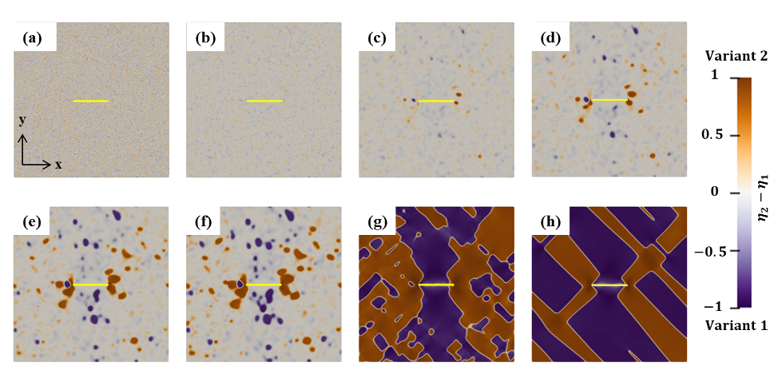
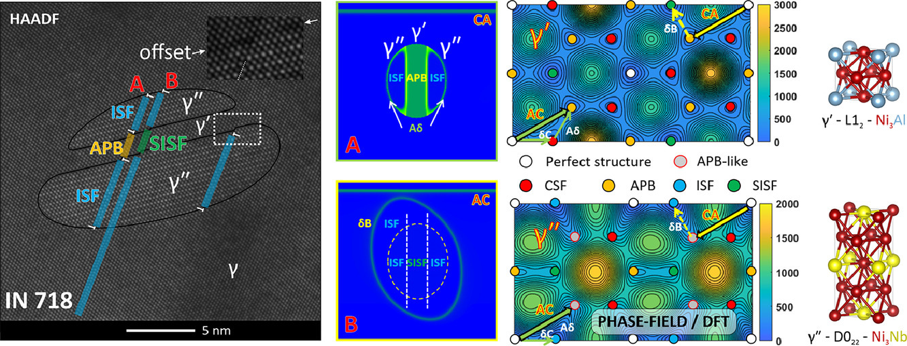
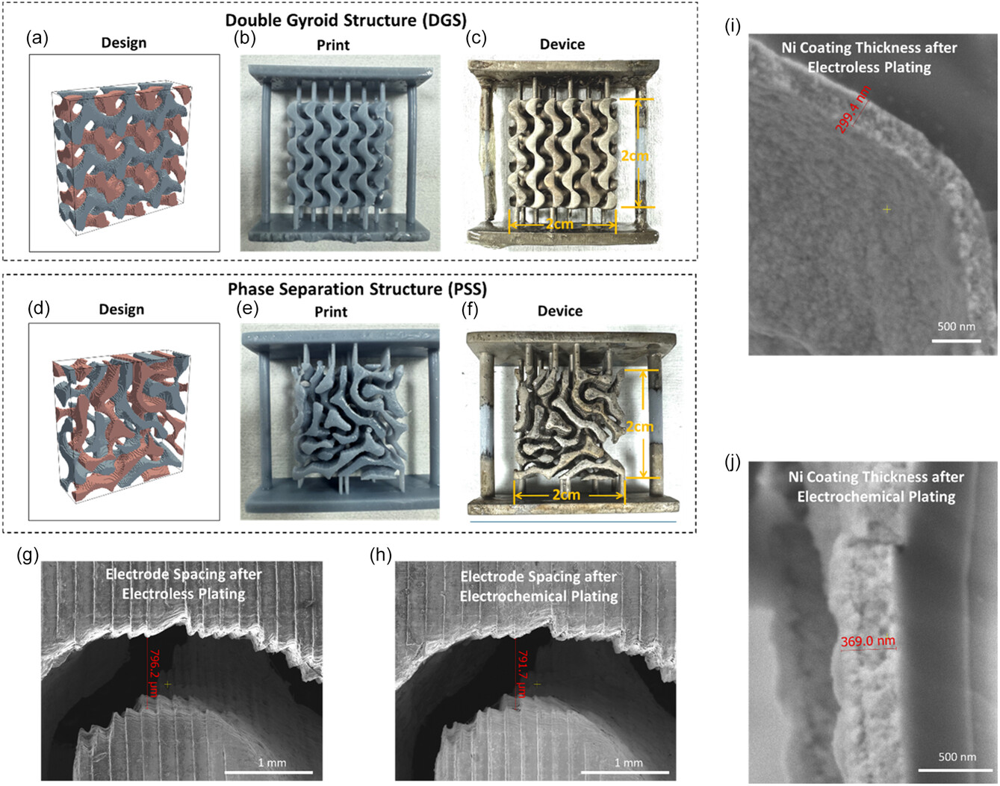

The M2D2 Lab studies how microstructures form, evolve, and control material properties. We combine multiphysics modeling, mesoscale simulation, machine learning, and interpretable data-driven analysis to reveal processing–microstructure–property relationships in energy materials, structural alloys, and architected porous systems. Our goal is to convert complex microstructural information into mechanistic understanding and actionable design principles for materials operating in energy and extreme environments.
Microstructure Informatics and AI-Guided Materials Design

We develop microstructure informatics framework that integrate simulation-generated datasets, image-based learning, physically motivated descriptors, interpretable machine learning, causal analysis, and regime discovery to connect morphology with microstructure-aware properties.
- Machine learning insights into microstructural origins of transport and mechanical properties in porous microstructures
- Machine-learning-assisted deciphering of microstructural effects on ionic transport in composite materials: A case study of Li7La3Zr2O12–LiCoO2
- Integrated framework to model microstructure evolution and decipher the microstructure–property relationship in polymeric porous materials
Chemo-Mechanical Coupling and Degradation in Energy Materials

We develop mesoscale computational models to understand how ion transport, interfacial reactions, phase transformations, stress evolution, cracking, and microstructural heterogeneity interact during battery manufacturing and operation.
- Computational simulation of asymmetric phase transformation in cracked Li7La3Zr2O12: Variant selection and chemo-mechanical implications
- Modeling single-crystal battery materials: From fundamental understanding to performance evaluation
- Machine-learning-assisted deciphering of microstructural effects on ionic transport in composite materials: A case study of Li7La3Zr2O12–LiCoO2
Defect-Mediated Phase Transformations and Alloy Design

We study how dislocations, stacking faults, grain boundaries, precipitates, and applied stresses mediate phase transformations and deformation mechanisms in structural alloys.
- Localized phase transformation at stacking faults and mechanism-based alloy design
- Generalized stacking fault energy surface mismatch and dislocation transformation
- Phase field modeling of shearing processes of a dual-lobed γ″|γ′|γ″ coprecipitate
- Quantitative prediction of Suzuki segregation at stacking faults of the γ″ phase in Ni-base superalloys
Architected Porous and Interpenetrating Materials for Energy Applications

Architected porous and interpenetrating microstructures/structures provide powerful routes to control transport, reaction, and mechanical response. We investigate how microstructure and structure design can regulate ion diffusion, fluid transport, mechanical integrity in structure and functional materials.
- Random 3D interpenetrating electrode design for energy storage applications
- Interpenetrated structures for enhancing ion diffusion kinetics in electrochemical energy storage devices
- Interpenetrating 3D electrodes for high-rate alkaline water splitting
- Nanocone-modified surface facilitates gas bubble detachment for high-rate alkaline water splitting
- Tailored additive design of scaffold-free porous Mg for ultimate hydrogen storage